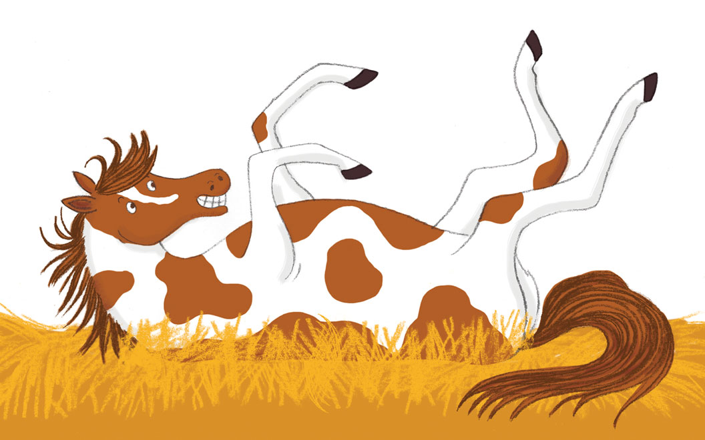
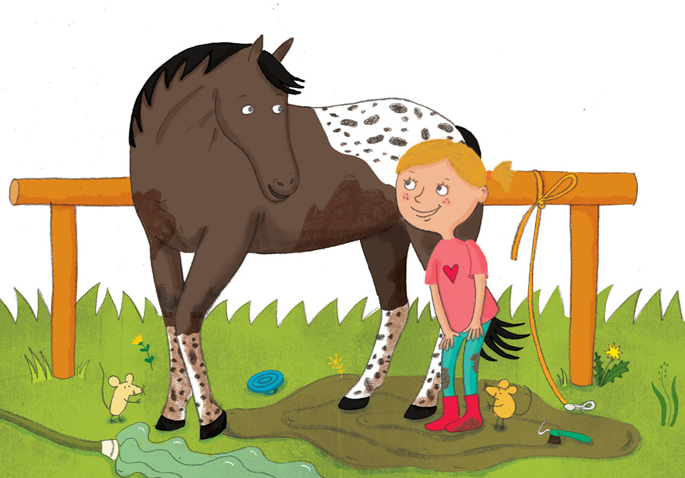
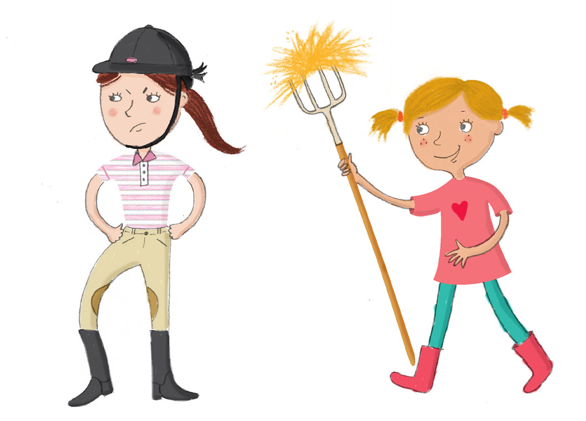

⟵ Vissza a kezdőlapra
Csuti a lovassuliba érve rögtön tudja, hogy az ő lova Ráró lesz, nem más! El is nevezi Lópacinak, és attól kezdve minden
titkát elmeséli neki, ajándékokkal lepi meg, lelkesen ismerkedik a lovaglással.
Lópaci ettől eleinte nem túl boldog… Ám szép lassan megbarátkozik Csutival, és végül elválaszthatatlan párost
alkotnak.
Csuti arrives at the riding school and immediately knows that his horse will be Raro, no other! She names him Lópaci and
from then on she tells him all his secrets, presents him with gifts and learns to ride with enthusiasm.
At first, Lópaci is not very happy… But he slowly makes friends with Csuti and they become an inseparable couple.